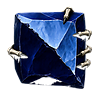
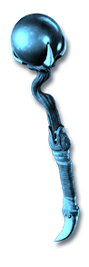
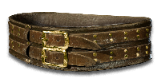
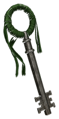

The Descent has five bands, from the Cinders of Hatred to the Realm of Destruction. Clear each band's floors to reach its Echo.


The bands
Each band has ten floors and ends in an Echo arena. Follow the stairs to go deeper.
- Kill Baalon each difficulty
- The Worldstone Chambertake the stair in its north wall
- Arreat Descenttouch its waypoint; it brings you back
- Bands I–V10 floors each, stair to stair
- An echo below each bandin Hell, its sigil cubed in Harrogath opens it
Way in: Take the stairs down from Arreat Descent after that difficulty's Baal; in Hell, the Sigil of Hatred opens its echo.
 Mephisto's Remnant 100%
Mephisto's Remnant 100% Mephisto's Gall 85%
Mephisto's Gall 85%
Splinter of Hatred 20% Sanctuary Stone III 50%
Sanctuary Stone III 50% Sigil of Hatred 5%
Sigil of Hatred 5%
Eye of the Durance 4% Sanctuary Stone IV 10%
Sanctuary Stone IV 10%Way in: Take the stairs on from the Echo of the Durance; in Hell, the Sigil of Anguish opens its echo.
Way in: Take the stairs on from the Echo of the Catacombs; in Hell, the Sigil of Pain opens its echo.
 The Bell of Bone 0.8333% (1 in 120)LH Echo III 100%
The Bell of Bone 0.8333% (1 in 120)LH Echo III 100%Way in: Take the stairs on from the Echo of the Tomb; in Hell, the Sigil of Terror opens its echo.
 The Unbound Page 0.8333% (1 in 120)LH Echo IV 100%
The Unbound Page 0.8333% (1 in 120)LH Echo IV 100%Way in: Take the stairs on from the Echo of the Sanctum; in Hell, the Sigil of Destruction opens its echo.

The Unspent Oath 0.8333% (1 in 120)LH Echo V 100%How the Descent works
Sigil of Hatred
Sigil of Anguish Sigil of TerrorSkip the floorsCube a sigil in Harrogath · HellMephisto's Gall
Sigil of TerrorSkip the floorsCube a sigil in Harrogath · HellMephisto's Gall Baal's TentacleHell’s rewardsEcho trophies · open the Black Abyss
Baal's TentacleHell’s rewardsEcho trophies · open the Black AbyssAfter Baal, take the stairs between the two torches in the Worldstone Chamber's north wall. Touch the Arreat Descent waypoint; it replaces Arreat Plateau in Act V.
Floors have stairs up and down, but no waypoints. Echo arenas allow Town Portals. The final Echo ends the Descent.
What the echoes drop
Hell · chance per kill · one player, 0% magic find.
 Echo of MephistoCinders of HatredMephisto's RemnantHell · 100%Mephisto's GallHell · 85%Sigil of HatredHell · 5%Sanctuary Stone IIIHell · 50%Sanctuary Stone IVHell · 10%Mephisto loot
Echo of MephistoCinders of HatredMephisto's RemnantHell · 100%Mephisto's GallHell · 85%Sigil of HatredHell · 5%Sanctuary Stone IIIHell · 50%Sanctuary Stone IVHell · 10%Mephisto loot Echo of AndarielPits of Anguish
Echo of AndarielPits of AnguishThe Descent’s uniques
The Bell of BoneBand III · Hell · 0.8333% (1 in 120)The Unbound PageBand IV · Hell · 0.8333% (1 in 120)The Unspent OathBand V · Hell · 0.8333% (1 in 120)